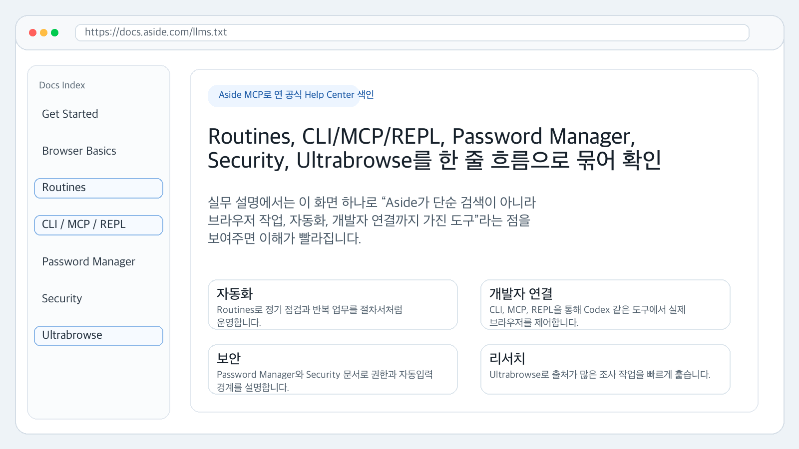

Aside 브라우저 & 레이지코덱스
2편은 "내 일을 어디에 어떻게 얹나요?" 입니다.
오늘은 실제 가능한 장면을 더 많이 봅니다.
1편에서 2편으로
1편은 개념을 잡는 시간.
2편은 "내 업무에 붙이면 뭐가 달라지는가"를 보는 시간입니다.
- Aside는 웹을 대신 눌러주는 손입니다
- 레이지코덱스는 일을 끝까지 몰고 가는 현장 책임자입니다
- 둘을 같이 쓰면 자료 수집 → 제작 → 실제 화면 검증까지 이어집니다
오늘의 목표: "신기하다"가 아니라 "내일 어디에 쓸지"까지 정하기.
90분 여정 지도
| 파트 | 오늘 더 키우는 비중 | 시간 |
|---|---|---|
| 0. 오프닝 | 손과 두뇌 비유 다시 잡기 | 8분 |
| 1. Aside 딥다이브 | 권한, 자동화, 예시를 쉽게 설명 | 25분 |
| 2. 가능한 실무 사례 | 사무실·영업·자료조사·QA 사례 | 25분 |
| 3. 레이지코덱스 최신 흐름 | visual-qa, CodeGraph, v4.16.0 | 18분 |
| 4. 콤보 워크플로우 | Aside + LazyCodex 조합 설계 | 17분 |
| 5. 실습 | 내 업무 1개에 적용 | 10분 |
강의 전체 키워드는 위임, 경계, 증거입니다.
끝나면 할 수 있는 것
- Aside에게 맡기기 좋은 웹 업무를 5개 이상 말할 수 있다
- Read-only, Guard, Full access 차이를 생활 비유로 설명할 수 있다
exec,REPL,MCP,Ultrabrowse,Routines를 겁내지 않는다- 레이지코덱스가 왜 "검증하는 AI"인지 설명할 수 있다
- Aside + 레이지코덱스 콤보 프롬프트를 직접 한 줄 쓸 수 있다
도구 이름보다 중요한 건 일의 모양을 보는 눈입니다.
가장 쉬운 비유: 손, 책임자, 공증인
| 역할 | 도구 | 하는 일 |
|---|---|---|
| 손 | Aside | 웹사이트를 보고, 클릭하고, 다운로드한다 |
| 책임자 | 레이지코덱스 | 일을 계획하고, 빠뜨린 부분을 다시 챙긴다 |
| 공증인 | 증거 파일 | 진짜 열렸는지, 몇 장인지, 화면이 맞는지 남긴다 |
AI 자동화는 "똑똑한 말"이 아니라 행동과 증거로 판단해야 합니다.
재미있게 배우되, 안전하게 씁니다
AI 브라우저는 편하지만, 로그인된 내 계정 위에서 움직입니다.
- 처음엔 Read-only로 시작합니다
- 클릭이 필요한 일은 Guard로 둡니다
- 결제, 전송, 삭제, 게시 같은 행동은 사람이 다시 봅니다
- "다 했습니다"보다 스크린샷, 파일, 로그를 믿습니다
신입에게 금고 비밀번호를 통째로 맡기지 않듯, AI에게도 경계가 필요합니다.
웹을 대신 쓰는 손, Aside 딥다이브
"옆자리 신입에게 웹 업무를 맡기는 방법"으로 이해합니다.
Aside를 한 문장으로 말하면
Aside는 내가 로그인한 웹을 AI가 대신 읽고 조작하는 브라우저입니다.
- 크롬처럼 웹페이지를 엽니다
- AI 에이전트가 화면의 버튼, 입력창, 링크를 이해합니다
- 필요하면 클릭하고 입력하고 다운로드합니다
- 결과를 글, 파일, 스크린샷으로 남길 수 있습니다
그래서 "검색 도구"가 아니라 작업 도구에 가깝습니다.
그냥 브라우저와 뭐가 다른가요?
| 장면 | 그냥 브라우저 | Aside 브라우저 |
|---|---|---|
| 자료 찾기 | 내가 탭을 열고 복사 | AI가 탭을 열고 비교 |
| 로그인 사이트 | 내가 계속 클릭 | 로그인 상태에서 대신 탐색 |
| 반복 다운로드 | 내가 날짜 바꾸며 저장 | AI가 규칙대로 내려받음 |
| QA | 내가 하나씩 눌러봄 | AI가 눌러보고 증거 저장 |
차이는 "보는 것"이 아니라 대신 움직이는 것입니다.
핵심은 "내 계정 위에서" 입니다
많은 업무는 공개 웹이 아니라 로그인 뒤에 숨어 있습니다.
- 쇼핑몰 관리자 주문 목록
- 은행과 카드사의 거래내역
- 세무, 노무, 공공기관 포털
- CRM, 메일, 캘린더, 고객센터 SaaS
- 내부 문서함과 드라이브
Aside의 매력은 여기서 나옵니다.
AI가 인터넷 지식을 말하는 게 아니라 내 화면의 일을 처리합니다.
Aside 에이전트는 이렇게 움직입니다
- 화면을 읽는다: 버튼, 표, 링크, 입력창을 찾음
- 계획한다: 다음에 누를 것과 피해야 할 것을 정함
- 실행한다: 클릭, 입력, 다운로드, 탭 이동
- 확인한다: 화면 변화와 파일 저장 여부를 봄
- 보고한다: 요약, 링크, 스크린샷, 파일 위치
사람처럼 느리게 보일 때도 있습니다.
대신 그 느림은 화면을 실제로 확인하는 시간입니다.
권한은 세 단계로 생각하세요
| 모드 | 쉽게 말하면 | 추천 시작점 |
|---|---|---|
| Read-only | 눈으로만 보기 | 처음 쓰는 사이트 |
| Guard | 위험하면 물어보기 | 대부분의 실무 |
| Full access | 전권 위임 | 반복·저위험 업무만 |
처음부터 Full access로 달리는 건 초보 운전자가 고속도로 1차선에 들어가는 느낌입니다.
대부분은 Guard가 충분합니다.
비밀번호는 "보여주기"가 아니라 "자동입력"
중요한 원칙: AI에게 비밀번호를 말로 알려주는 방식이 아닙니다.
- 저장된 비밀번호 관리자가 자동입력합니다
- AI는 별표 뒤의 실제 비밀번호를 몰라도 됩니다
- 로그인 뒤의 화면에서 필요한 업무만 진행합니다
- 계정 추가, 결제, 삭제는 사람 확인을 거칩니다
비밀번호는 열쇠입니다.
Aside는 열쇠를 외우는 직원이 아니라, 문이 열린 뒤 일을 하는 직원에 가깝습니다.
Guard 모드는 "결재 올리는 대리"입니다
대리가 자료는 잘 모으지만, 계약서 발송은 대표님 확인을 받는 상황과 같습니다.
- 페이지 이동, 자료 읽기, 다운로드는 진행
- 결제, 메시지 전송, 게시, 삭제는 멈춤
- "이 행동을 해도 될까요?"라고 사람에게 묻기
- 사람이 승인하면 이어서 실행
처음 실무에 붙일 때 가장 편한 모드는 Guard입니다.
Read-only는 좋은 준비운동입니다
"먼저 들어가서 뭐가 있는지만 봐줘"가 Read-only입니다.
- 새 SaaS 관리자 화면 구조 파악
- 경쟁사 사이트 공개 페이지 요약
- 고객센터 티켓 분류만 보기
- 홈택스, 4대보험 같은 민감 포털에서 메뉴 위치만 확인
Read-only로 지도를 만든 뒤, Guard로 행동을 맡기면 훨씬 안전합니다.
Full access는 자동운전이 아닙니다
Full access는 "위험해도 일단 진행"에 가까운 모드입니다.
- 매일 같은 보고서 다운로드처럼 실패 비용이 낮은 일
- 테스트 계정이나 샌드박스
- 삭제·발송·결제 없는 반복 클릭
- 사람이 곧바로 결과를 확인할 수 있는 일
핵심 질문: 잘못 눌렀을 때 되돌릴 수 있는가?
Aside를 부르는 세 가지 입구

exec는 통째 위임,REPL은 정밀 조작,mcp는 Codex 같은 도구가 Aside를 부르는 통로입니다.
Ultrabrowse는 "많은 페이지를 빠르게 훑는 눈"

이 화면을 Aside MCP로 직접 열어 캡처했습니다.
Routines, CLI/MCP/REPL, Password Manager, Security, Ultrabrowse가 공식 문서에서 한 줄로 연결됩니다.
Routines는 반복 업무를 "절차서"로 묶는 방식
매주 같은 일을 한다면, 매번 새로 설명하지 말고 루틴으로 만듭니다.
- 월요일 아침 SaaS 지표 내려받기
- 매월 카드 명세서와 세금계산서 수집
- 매주 경쟁사 공지 확인
- 매일 고객 문의 미처리 건 요약
Routines는 "한 번 가르친 업무를 다음 달에도 반복"하게 만드는 장치입니다.
MCP와 CLI는 개발자용 출입문입니다

codex mcp get aside에서 enabled, stdio, command, args가 확인됩니다.
강의 중에는 이 장면으로 "내 Codex가 Aside를 부를 수 있다"를 설명하면 됩니다.
Aside가 좋은 이유: 증거를 남길 수 있다

"확인했습니다"보다 좋은 말은 "여기 캡처가 있습니다"입니다.
화면, URL, 파일, 클릭 전후 상태를 남기면 AI 업무가 다시 검토 가능한 일이 됩니다.
사람은 언제 끼어들어야 하나요?
AI를 잘 쓰는 사람은 모든 걸 맡기는 사람이 아니라, 멈출 지점을 잘 정하는 사람입니다.
- 돈이 나가는 순간
- 고객에게 메시지가 나가는 순간
- 파일이 삭제되거나 덮어써지는 순간
- 법적 신고, 세무 신고, 계약 제출 직전
승인 지점이 명확하면 자동화는 무서운 도구가 아니라 든든한 조수입니다.
Aside 사례 1: 자료조사
"이 주제로 공식 자료와 기사 5개를 비교해서 표로 정리해줘."
- 검색 결과만 보지 않고 실제 페이지를 엽니다
- 공식 문서, 도움말, 가격표를 나눠 봅니다
- 출처 링크와 확인 날짜를 함께 남깁니다
- 서로 다른 주장이 있으면 증거 수준을 구분합니다
강의 자료, 블로그, 제안서 리서치에 바로 붙일 수 있습니다.
Aside 사례 2: 로그인 포털 자료 수집
"이번 달 거래내역 PDF와 CSV를 내려받아 정리해줘."
- 로그인된 은행, 카드사, 쇼핑몰 관리자에 들어감
- 기간을 맞추고 다운로드 버튼을 누름
- 파일명과 저장 위치를 기록
- 빠진 월이 있는지 화면에서 다시 확인
단, 이 흐름은 처음엔 Guard로 두고 파일 저장까지만 맡기는 것이 좋습니다.
Aside 사례 3: 경쟁사 가격과 패키지 비교
"경쟁사 8곳의 가격, 무료체험, 고객지원 문구를 표로 비교해줘."
- 가격 페이지를 직접 열어 확인
- 숨은 FAQ, 약관, 플랜 제한까지 탐색
- 스크린샷을 남겨 나중에 다시 검토
- 바뀔 수 있는 정보는 확인 날짜를 적음
영업 자료를 만들 때 "감" 대신 페이지 근거를 쌓을 수 있습니다.
Part 1 정리 퀴즈
- 처음 쓰는 사이트에 권한을 줄 때 가장 안전한 시작 모드는?
- 위험한 행동에서 사람 승인으로 멈추는 모드는?
- 증거 캡처와 한 단계 조작에 어울리는 방식은
exec일까,REPL일까? - 반복 업무 절차서에 가까운 기능 이름은?
답: Read-only, Guard, REPL, Routines.
실제 가능한 여러 사례
Aside로 가능한 업무 지도
| 업무 종류 | Aside가 특히 좋은 이유 |
|---|---|
| 자료조사 | 페이지를 열고 출처를 남김 |
| 운영 다운로드 | 로그인 화면에서 반복 클릭 |
| 영업 준비 | 고객사, 경쟁사, 과거 기록 확인 |
| QA | 만든 페이지를 실제로 눌러봄 |
| 정기 점검 | Routines로 반복 절차화 |
핵심은 "브라우저에서 사람이 하던 일"입니다.
실무 사례 1: 세무·노무 포털 자료 모으기
월말마다 흩어진 자료를 모으는 장면을 떠올려보세요.
- 홈택스, 4대보험, 은행, 카드사에서 자료 위치 확인
- 기간별 조회 조건을 맞춤
- 내려받은 파일명을 규칙대로 정리
- 누락된 항목을 표로 보고
주의: 신고 제출은 사람 승인 지점으로 남깁니다.
Aside는 자료 수집 조수, 최종 판단은 전문가입니다.
실무 사례 2: 인보이스와 영수증 수집
"지난달 SaaS 결제 영수증을 다 모아줘."
- Slack, Notion, GitHub, Vercel, OpenAI 같은 서비스 결제 페이지 탐색
- 영수증 PDF 다운로드
- 금액, 결제일, 공급자명을 표로 추출
- 빠진 서비스가 있으면 목록화
회계팀 입장에서는 한 달에 한 번 반복되는 손품을 줄일 수 있습니다.
실무 사례 3: 쇼핑몰 관리자 반복 확인
"미처리 주문과 배송 지연 건을 아침마다 요약해줘."
- 관리자 페이지 로그인 상태에서 주문 목록 확인
- 상태 필터를 바꿔가며 지연 건 찾기
- 고객 문의와 주문번호를 연결
- 담당자가 봐야 할 것만 모아 보고
실제 발송, 환불, 취소는 Guard 승인 지점으로 두면 됩니다.
실무 사례 4: SaaS 리포트 내려받기
"지난주 광고 지표와 매출 리포트를 받아서 한 표로 합쳐줘."
- 광고 관리자, 결제 시스템, 분석 도구를 순서대로 방문
- CSV 또는 PDF 리포트 다운로드
- 날짜 범위를 맞췄는지 화면에서 확인
- 레이지코덱스에게 넘길 원자료 폴더를 만듦
Aside는 수집, 레이지코덱스는 분석과 보고서 작성에 강합니다.
실무 사례 5: 세일즈 미팅 준비
"내일 만날 고객사의 최근 뉴스, 제품, 채용공고를 1장으로 정리해줘."
- 고객사 홈페이지와 뉴스룸 확인
- LinkedIn, 채용 페이지, 보도자료를 비교
- 우리 제안과 연결될 만한 단서를 표시
- 회의 전에 읽을 요약본 생성
Aside의 초기 뿌리가 세일즈 보조였다는 점과 잘 맞는 사례입니다.
실무 사례 6: 고객센터 티켓 분류
"미답변 티켓을 오류, 결제, 기능 요청, 환불 문의로 나눠줘."
- 고객센터 SaaS에서 티켓 목록 읽기
- 본문을 열어 유형 분류
- 긴급도와 담당팀 추천
- 답변 초안은 작성하되, 발송은 사람 승인
고객에게 나가는 말은 항상 마지막에 사람이 봅니다.
실무 사례 7: 채용 후보와 회사 조사
"지원자의 공개 포트폴리오와 GitHub, 블로그를 요약해줘."
- 공개 링크만 확인
- 프로젝트, 기여도, 글의 주제를 요약
- 면접 질문 후보를 생성
- 민감하거나 사적인 정보는 제외
자동화가 가능하더라도 윤리와 개인정보 경계는 사람이 정해야 합니다.
실무 사례 8: 출장 준비 체크
"다음 주 부산 출장 동선, 호텔 후보, 회의장 주변 카페를 정리해줘."
- 지도와 예약 사이트를 열어 후보 비교
- 가격, 거리, 취소 조건을 표로 정리
- 캘린더 시간과 이동시간을 대조
- 예약 버튼 직전에는 사람에게 확인 요청
여행 자동화도 결제 전 멈춤이 핵심입니다.
실무 사례 9: 구매·조달 비교
"강의용 마이크 5개를 가격, 배송, 후기 기준으로 비교해줘."
- 쇼핑몰 여러 곳을 열어 실제 재고와 가격 확인
- 후기의 반복 불만을 요약
- 배송 예정일과 반품 조건을 표시
- 최종 구매는 사람 승인
직원에게 "좀 찾아봐"라고 맡기던 일을 브라우저 에이전트에게 맡기는 방식입니다.
실무 사례 10: 블로그와 강의안 리서치
"이 주제로 초보자용 강의안을 만들 근거를 모아줘."
- 공식 문서와 릴리스 노트 확인
- 신뢰도 높은 외부 기사만 분리
- 사용 사례를 쉬운 말로 바꿈
- 출처와 확인 날짜를 남김
오늘 이 강의안도 같은 원리입니다. 자료를 읽고, 새 산출물을 만들고, 검증합니다.
실무 사례 11: 공고·입찰·지원사업 모니터링
"이번 주 새로 올라온 지원사업 중 우리와 맞는 것만 골라줘."
- 공공기관 공고 페이지 방문
- 마감일, 대상, 제출서류 추출
- 자격이 애매한 항목은 보류 표시
- 제출은 사람 검토 후 진행
날짜와 조건이 중요한 업무일수록 캡처와 링크가 필요합니다.
실무 사례 12: 회의 전후 정리
"회의 전 자료를 모으고, 회의 후 액션아이템을 업무도구에 정리해줘."
- 캘린더와 관련 문서 찾기
- 참석자와 과거 메일 흐름 확인
- 회의 후 결정사항을 티켓 초안으로 정리
- 실제 등록·전송은 승인 뒤 실행
Aside는 여러 SaaS를 넘나드는 사무 조수로 쓸 때 빛이 납니다.
실무 사례 13: 만든 페이지 실제로 눌러보기
"문의 폼을 열고, 이름과 이메일을 넣고, 오류 메시지가 맞는지 캡처해줘."
- 실제 브라우저로 페이지 열기
- 버튼, 탭, 모달, 폼을 눌러봄
- 모바일과 데스크톱 화면 캡처
- 실패하면 재현 순서를 남김
개발자가 만든 것을 사용자의 손으로 다시 확인하는 역할입니다.
잘못 맡기면 생기는 일
자동화는 만능이 아니라, 잘못 맡기면 빠르게 사고를 냅니다.
- "최신 정보"라고 했지만 확인 날짜가 없음
- 로그인된 계정에서 잘못된 고객을 클릭
- 다운로드는 했지만 파일이 비어 있음
- 결제나 전송 버튼을 승인 없이 누름
그래서 모든 사례의 끝에는 경계와 증거가 붙어야 합니다.
미니 실습: 내 업무를 한 줄로 바꾸기
| 질문 | 예시 답 |
|---|---|
| 매번 여는 사이트는? | 카드사, 쇼핑몰, 고객센터 |
| 반복 클릭은? | 기간 선택, 다운로드, 필터 |
| 위험 버튼은? | 결제, 전송, 삭제 |
| 남겨야 할 증거는? | 파일, 캡처, 표, 링크 |
이 네 칸을 채우면 Aside 업무 설계가 시작됩니다.
사례의 끝은 증거 폴더입니다
자동화가 끝난 뒤에는 "어디에 무엇이 남았는가"가 보여야 합니다.
evidence/
screenshots/
downloads/
source-links.md
summary-table.md- 스크린샷은 화면 증거
- 다운로드는 원자료
- 링크 목록은 재확인 경로
- 요약표는 사람이 읽는 결론
Aside가 모은 증거가 정리되어 있어야, 레이지코덱스가 다음 일을 정확히 이어받습니다.
레이지코덱스 최신 흐름
"끝까지 하는 AI"가 지금 어디로 가는지 봅니다.
레이지코덱스는 무엇인가요?
Codex를 더 엄격하게 일하게 만드는 에이전트 하네스입니다.
- 계획을 세우고
- 파일을 읽고
- 수정하고
- 검증하고
- 증거를 남기고
- 필요하면 다시 고칩니다
그냥 "코드 써줘"가 아니라 끝났다는 말을 증명하게 만드는 장치입니다.
2026-07-03 이후 핵심: visual-qa
v4.15.0 자료의 핵심은 "감으로 만든 UI"를 "브라우저 증거로 검증한 UI"로 바꾸는 것입니다.
- 실제 브라우저에서 화면을 봄
- 375, 768, 1280px 같은 화면 크기를 확인
- hover, focus, click, scroll 상태를 봄
- 의미 없는 장식 모션은 통과시키지 않음
예쁜지보다 중요한 질문: 사용자가 실제로 눌렀을 때 맞는가?
DESIGN.md는 디자인 계약서입니다
"대충 세련되게"라고 시키면 AI는 자기 취향을 섞습니다.
DESIGN.md에는 이런 내용을 적습니다.
- 색상, 폰트, 간격
- 버튼과 카드의 상태
- 모바일과 데스크톱 차이
- 움직임 규칙
- 참고 URL과 캡처 시점
계약서를 먼저 쓰면, 구현자가 마음대로 꾸미는 일을 줄일 수 있습니다.
Live URL Cloner를 쉽게 말하면
"이 사이트처럼 만들어줘"라고 할 때, 스크린샷만 보는 게 아닙니다.
- 실제 URL을 브라우저로 엽니다
- 계산된 CSS와 반응형 레이아웃을 읽습니다
- hover, focus, active 상태를 확인합니다
- 그 결과를 DESIGN.md 계약으로 정리합니다
감상문이 아니라 실제 런타임에서 뽑은 디자인 재료입니다.
Existence-first: 새로 만들기 전에 먼저 찾기
v4.15.0 자료에서 중요한 개발 철학입니다.
- 지울 수 있나?
- 이미 있는 걸 재사용할 수 있나?
- 플랫폼 기본 기능으로 가능한가?
- 그래도 안 되면 최소한으로 만든다
좋은 AI 작업은 코드를 많이 쓰는 것이 아니라, 불필요한 코드를 줄이는 것입니다.
v4.16.0 업데이트: 시작은 가볍게, 세션은 오래
현재 LazyCodex v4.16.0 업데이트가 설치 중입니다.
- Codex 시작 때 ULTRAWORK 프롬프트를 더 작게 주입
- 긴 세션에서도 CodeGraph 상태가 새지 않도록 정리
- 임시 루트 제외, 고아 프로세스 정리, cleanup 실패 격리
- OpenCode와 LazyCodex 사용자에게 큰 마이그레이션은 예상되지 않음
쉽게 말하면: 세션이 길어져도 덜 지저분하게 일하도록 다듬은 업데이트입니다.
CodeGraph를 쉬운 말로
큰 코드베이스에서 "파일을 하나씩 뒤지는" 대신, 미리 만든 지도를 보는 방식입니다.
- 어떤 파일이 어떤 역할인지 빠르게 파악
- 오래 작업해도 임시 파일 때문에 헷갈리지 않게 관리
- 죽은 프로세스와 청소 실패가 다른 작업을 망치지 않게 분리
강의식 비유: 책상 위 서류 더미가 아니라 정리된 사무실 지도를 들고 일하는 것.
업데이트 후에는 새 세션이 안전합니다
설치가 끝나도 이미 열린 대화는 예전 상태를 들고 있을 수 있습니다.
- 플러그인 훅은 새 세션 시작 때 더 안정적으로 로드
- 새 버전의 프롬프트와 스킬이 반영됨
- CodeGraph 초기화도 새 흐름에서 깨끗하게 시작
그래서 오늘 작업이 끝난 뒤에는 새 Codex 세션을 여는 것을 권장합니다.
ulw는 언제 붙이나요?
"대충 제안만"이 아니라 "끝까지 해줘"일 때 붙입니다.
- 파일을 실제로 만들어야 할 때
- 테스트나 검증 증거가 필요할 때
- 여러 자료를 읽고 산출물을 정리해야 할 때
- 중간에 실패하면 다시 고쳐야 할 때
오늘 요청 끝의
ulw도 같은 뜻입니다.
새 강의안을 만들고, 장수와 렌더까지 확인하라는 신호입니다.
레이지코덱스식 완료: RED → GREEN
먼저 실패를 잡고, 그다음 고칩니다.
| 단계 | 뜻 |
|---|---|
| RED | 산출물이 없거나 조건을 못 맞춰 실패 |
| 구현 | 파일 생성, 코드 수정, 내용 보강 |
| GREEN | 같은 검증이 통과 |
| Real surface | 실제 HTML을 열어 사람이 보는 표면 확인 |
"잘 될 것 같아요"가 아니라 아까 실패한 기준이 이제 통과합니다라고 말하는 방식입니다.
TeamMode는 여러 사람에게 나눠 맡기는 느낌
큰 조사를 혼자 하지 않고, 여러 관점으로 쪼개는 방식입니다.
- 한 명은 공식 문서 확인
- 한 명은 경쟁사 조사
- 한 명은 오류 가능성 검토
- 한 명은 최종 보고서 정리
실제 회사에서 업무를 나눠 맡기듯, AI 작업도 역할을 나눌 수 있습니다.
긴 작업에는 기억과 메모가 필요합니다
사람이 긴 프로젝트에서 회의록을 남기듯, AI도 작업 메모가 필요합니다.
- 목표와 성공 기준
- 어떤 자료를 읽었는지
- 실패한 검증과 통과한 검증
- 남은 위험과 후속 작업
LazyCodex의 힘은 "열심히 한다"가 아니라 상태를 잃지 않는다에 있습니다.
초보자용 명령 예시
이 폴더 안 문서를 읽고, 초보자용 강의안으로 다시 만들어줘. ulw이 웹앱을 실제 브라우저에서 눌러보고, 오류가 있으면 고쳐줘. ulw이 라이브 URL을 디자인 참고로 삼아 DESIGN.md를 먼저 만들고 구현해줘.좋은 요청은 목적, 입력, 산출물, 검증 기준이 들어 있습니다.
레이지코덱스가 안 어울리는 일도 있습니다
모든 일에 큰 하네스를 켜면 오히려 무겁습니다.
- 한 줄 번역
- 간단한 맞춤법 수정
- 단순 파일명 확인
- 사람이 바로 판단할 수 있는 짧은 질문
작은 일은 작게, 큰 일은 끝까지.
이것이 도구를 오래 쓰는 요령입니다.
좋은 자동화는 비용도 관리합니다
오래 생각하는 AI는 비쌉니다. 그래서 기준이 필요합니다.
- 실패 비용이 큰 일인가?
- 반복해서 다시 쓸 산출물인가?
- 사람이 하면 오래 걸리는 일인가?
- 검증이 없으면 위험한 일인가?
네 질문 중 두 개 이상이 "예"라면 LazyCodex를 켤 만합니다.
Part 3 정리
레이지코덱스는 "AI를 더 똑똑하게 보이게" 하는 도구가 아닙니다.
- 완료 기준을 강화합니다
- 브라우저 증거를 중요하게 봅니다
- 새 코드를 만들기 전에 기존 것을 찾습니다
- 긴 세션에서도 상태를 관리하려고 합니다
ulw는 "끝까지 처리" 신호입니다
Aside가 손이라면, 레이지코덱스는 검증하는 책임자입니다.
Aside + LazyCodex 콤보 워크플로우
다시 손이 눌러보며 확인하는 이야기입니다.
콤보 기본식
Aside: 실제 웹에서 자료와 증거 수집
LazyCodex: 자료를 바탕으로 산출물 제작
Aside: 결과물을 실제 브라우저에서 조작 검증
LazyCodex: 실패를 수정하고 증거 기록이 흐름이 강한 이유는, 처음과 끝이 모두 실제 화면에 닿기 때문입니다.
콤보 사례 1: 경쟁사 조사 → 홈페이지 개선
목표: 경쟁사 5곳을 보고 우리 서비스 페이지를 개선한다.
- Aside가 경쟁사 가격, CTA, FAQ를 캡처
- LazyCodex가 차이표와 개선안을 작성
- LazyCodex가 홈페이지 문구와 섹션을 수정
- Aside가 실제 페이지에서 모바일·데스크톱 CTA를 눌러봄
결과물은 보고서가 아니라 개선된 페이지와 검증 증거입니다.
콤보 사례 2: 세무 포털 자료 → 고객 안내서
목표: 고객에게 줄 월간 세무 준비 안내서를 만든다.
- Aside가 포털과 카드사에서 필요한 자료 위치 확인
- 내려받을 파일 목록과 누락 체크표 생성
- LazyCodex가 고객용 쉬운 안내서 작성
- Aside가 안내서 링크와 다운로드 파일이 열리는지 확인
민감한 제출은 사람 승인, 자료 정리는 자동화로 나눕니다.
콤보 사례 3: SaaS 리포트 → 주간 대시보드
목표: 매주 반복되는 지표 보고를 줄인다.
- Aside가 광고, 결제, 분석 도구에서 CSV를 다운로드
- LazyCodex가 데이터를 정리하고 그래프 생성
- LazyCodex가 주간 코멘트를 초안 작성
- Aside가 대시보드 링크와 필터가 실제로 작동하는지 QA
손으로 모으던 파일이 자동 보고 루틴으로 바뀝니다.
콤보 사례 4: 강의안 새 버전 만들기
목표: 기존 강의안은 보존하고, 새 폴더에 2편을 만든다.
- Aside나 웹 도구가 최신 문서와 릴리스 노트를 확인
- LazyCodex가 옵시디언 노트와 기존 HTML 구조를 읽음
- 같은 장수로 Markdown과 HTML 생성
- 브라우저에서 실제 슬라이드를 열어 1장과 80장을 확인
지금 보고 있는 이 작업이 바로 그 예시입니다.
콤보 사례 5: 제품 화면 visual-qa
목표: "예뻐 보이는 페이지"가 아니라 "실제로 눌리는 페이지"를 만든다.
- Aside가 레퍼런스 URL의 화면과 상태를 확인
- LazyCodex가 DESIGN.md 계약을 작성
- 구현 후 Aside가 hover, focus, click, scroll을 캡처
- LazyCodex가 깨진 부분을 다시 고침
v4.15.0 이후 흐름과 가장 잘 맞는 콤보입니다.
콤보 사례 6: 고객지원 품질 개선
목표: 반복 문의를 줄이는 FAQ와 답변 템플릿을 만든다.
- Aside가 고객센터 티켓을 유형별로 읽음
- LazyCodex가 반복 질문과 원인을 분류
- FAQ 초안과 답변 템플릿 작성
- Aside가 고객센터 화면에서 템플릿 적용 위치를 확인
발송은 사람 승인. 정리와 초안은 AI에게 맡깁니다.
콤보 사례 7: 채용 페이지 개선
목표: 지원자가 헷갈리지 않는 채용 페이지를 만든다.
- Aside가 경쟁사 채용 페이지와 공개 FAQ를 조사
- LazyCodex가 우리 채용 페이지 구조를 개선
- Aside가 지원 폼을 실제로 눌러보고 오류를 캡처
- LazyCodex가 문구와 폼 검증 오류를 수정
채용도 결국 웹 화면과 문서 경험의 문제입니다.
콤보 사례 8: 월간 경영 루틴
목표: 매월 반복되는 자료수집과 보고를 한 번의 루틴으로 묶는다.
- Aside Routines가 정해진 사이트에서 자료를 모음
- LazyCodex가 표준 보고서와 체크리스트 작성
- 누락 파일이 있으면 Aside가 다시 확인
- 최종 보고서에는 출처, 날짜, 파일 경로를 남김
매월 "어디까지 했더라"를 줄이는 방식입니다.
콤보 레시피 한 장 요약
| 필요 | 먼저 쓸 도구 | 다음 도구 |
|---|---|---|
| 웹 자료 수집 | Aside | LazyCodex로 정리 |
| 문서·코드 제작 | LazyCodex | Aside로 화면 검증 |
| 반복 루틴 | Aside Routines | LazyCodex로 보고서 |
| UI 품질 확인 | Aside REPL | LazyCodex로 수정 |
손이 먼저냐 두뇌가 먼저냐는 일의 시작점에 따라 달라집니다.
직접 해보기와 마무리
손과 두뇌를 어디에 둘지 정합니다.
10분 실습: 내 업무 하나 고르기
종이에 네 줄만 적어보세요.
- 매번 여는 사이트:
- 반복해서 누르는 버튼:
- 절대 자동으로 누르면 안 되는 버튼:
- 남겨야 하는 증거:
이 네 줄이 나오면 자동화 설계의 절반은 끝난 것입니다.
Aside만 쓰는 요청 예시
Read-only로 이 사이트 5곳을 열어 가격, 무료체험, 고객지원 문구를 표로 정리해줘.
각 항목에는 확인한 URL과 확인 날짜를 남겨줘.
결제, 가입, 문의 전송은 절대 하지 마.처음에는 읽기 전용, 출처 포함, 금지 행동 명시.
이 세 가지가 안전한 시작입니다.
LazyCodex만 쓰는 요청 예시
이 폴더의 기존 강의안을 읽고, 같은 장수의 새 버전을 만들어줘.
원본은 수정하지 말고 새 폴더에 저장해줘.
장수, 필수 키워드, HTML 렌더를 검증해서 증거 파일을 남겨줘. ulw파일 산출물과 검증 기준이 있을 때 잘 맞습니다.
Aside + LazyCodex 콤보 요청 예시
Aside로 경쟁사 5곳의 실제 페이지를 열어 캡처와 출처를 모아줘.
그 자료를 바탕으로 LazyCodex가 우리 서비스 페이지 개선안을 만들고,
수정 후 다시 Aside로 모바일과 데스크톱에서 CTA를 눌러 검증해줘. ulw수집, 제작, 검증이 모두 들어간 요청입니다.
실행 전 안전 체크리스트
- Read-only로 시작할 수 있는가?
- Guard 승인 지점이 정해졌는가?
- 결제, 전송, 삭제, 제출 버튼을 금지했는가?
- 저장 파일명과 위치가 정해졌는가?
- 성공 판정 증거가 명확한가?
자동화는 "빨리"보다 되돌릴 수 있게가 먼저입니다.
언제 뭘 쓰나
| 상황 | 추천 |
|---|---|
| 웹사이트를 열고 자료를 모아야 함 | Aside |
| 파일과 코드를 만들고 검증해야 함 | 레이지코덱스 |
| 만든 웹 결과를 실제로 눌러봐야 함 | Aside REPL |
| 긴 작업을 끝까지 몰고 가야 함 | ulw |
| 매달 같은 절차를 반복해야 함 | Aside Routines + LazyCodex |
짧게 말하면: 손이 필요한가, 책임자가 필요한가, 둘 다 필요한가입니다.
마지막 3줄
Aside는 로그인된 웹을 대신 다루는 손입니다.
레이지코덱스는 끝났다는 말을 증거로 확인하는 두뇌입니다.
둘을 합치면 "자료를 모으고, 만들고, 실제로 눌러 검증하는" 업무 흐름이 됩니다.
참고 자료
- Obsidian Aside 브리프: 2026-07-04 정리본
- Obsidian oh-my-openagent v4.15.0 visual-qa 노트: 2026-07-03 이후 자료
- Aside changelog/docs 확인: 2026-07-08
- LazyCodex v4.16.0 업데이트 노트: 2026-07-08 세션 내 확인